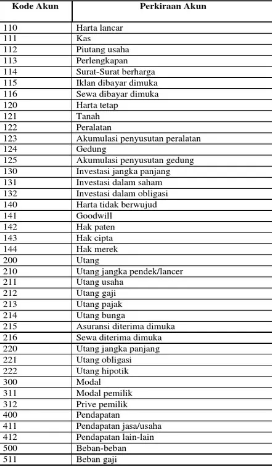

Debit dan Kredit
Pengertian debit dan kredit adalah suatu istilah yang digunakan dalam ilmu akuntansi yang merujuk pada pengakuan transaksi di dalam laporan keuangan. Debit adalah istilah yang digunakan untuk menggambarkan sebuah transaksi yang menambah jumlah uang dalam sebuah rekening. Sebagai contoh, jika sebuah perusahaan menerima uang dari sebuah transaksi penjualan, maka perusahaan tersebut akan mencatat transaksi tersebut sebagai debit di dalam rekening penjualan.
Sementara itu, kredit adalah istilah yang digunakan untuk menggambarkan sebuah transaksi yang mengurangi jumlah dari uang dalam sebuah rekening. Sebagai contoh, jika sebuah perusahaan mengeluarkan uang untuk membeli bahan baku, maka perusahaan tersebut akan mencatat transaksi tersebut sebagai kredit di dalam rekening pembelian.
Maka sama seperti kode akun, masing-masing dari elemen akuntansi memiliki debit, dan kredit yang beda, yakni:
Harta: +debit -kredit
Utang: +kredit -debit
Modal: +kredit -debit
Pendapatan: +kredit -debit
Beban: +debit -kredit
Yang paling penting pada pencatatan nominal uang di akuntansi adalah untuk kredit dan debitnya seimbang, maka jika debitnya 1jt maka kreditnya juga harus 1jt menggunakan segala elemen yang ada
kodeAkun
KodeAkun sangatlah penting, karena mereka digunakan oleh seluruh akuntan di dunia, pada saat mereka membuat neraca, laporan keuangan, mekanisme debit kredit dan lainnya. Kode akun merupakan sekumpulan nomer 3 digit yang masing-masing memiliki definisinya sendiri, nomer yang di paling depan biasanya menentukan ia termasuk dalam elemen apa, kedua dan ketiga untuk klasifikasi lebih lanjut.

elemen - elemen akun yang merupakan kategori dari akun - akun yang lain, biasanya memiliki digit ketiga 0, misalnya 110, 120, 130, 140....dst
Inflasi
Inflasi adalah Proses meningkatnya harga-harga secara umum dan terus-menerus dalam jangka waktu lama atau Keadaan yang menyatakan nilai uang menurun
Deflasi adalah kebalikannya inflasi, yakni Proses menurunnya harga-harga secara umum dan terus-menerus dalam jangka waktu lama atau keadaan yang menyatakan nilai uang meningkat
Maka dari situ, kita dapat mengelompokkan inflasi berdasarkan keparahannya, yakni:
Inflasi ringan: Inflasi yang masih belum begitu mengganggu keadaan ekonomi. Berkisar lebih kecil dari 10%
Inflasi sedang: Inflasi ini menurunkan kesejahteraan penduduk yang berpenghasilan tetap. Berkisar antara 10% hingga 30%
Inflasi berat: Inflasi ini mengacaukan kondisi perekonomian. Berkisar diantara 30% hingga 100%
Inflasi hiperberat: Inflasi ini sudah mengacaukan perekonomian dan sulit dihentikan. Berkisar lebih besar dari 100%
Penyebab inflasi demikian:
• Permintaan yang lebih besar daripada supply (tarikan/tekanan permintaan)
• Kenaikan bahan baku maupun biaya produksi (desakan/dorongan biaya)
• Tekanan permintaan + dorongan ongkos (inflasi struktural)
• Peredaran uang yang tak terkendali
• Kekacauan politik dan ekonomi
• Tuntutan kenaikan upah